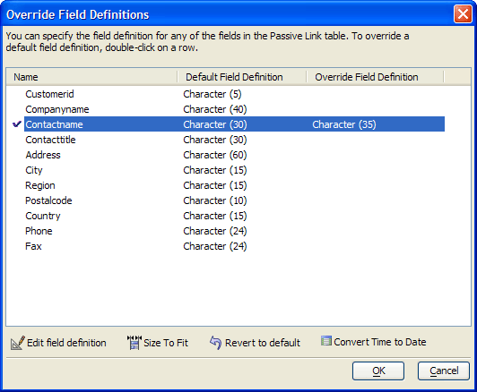

Override Field Definitions Dialog
The Override Field Definitions dialog allows you to redefine the field characteristics of a table that is going to be created by importing a table from a SQL back-end database.
You may open the Override Field Definitions dialog from the <span class=Screen>Specify Table Name</span> dialog.

Limitations
Desktop applications only.
See Also